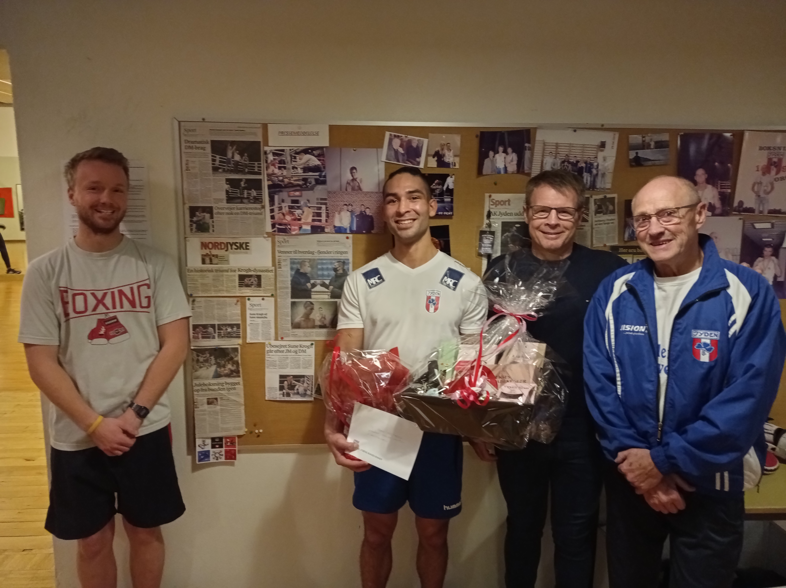

Dansk mester 2020
16. November 2020
Søndag d. 15/11-2020 vandt Sune Heltberg tredje kamp i streg ved årets danske mesterskaber, og kan dermed for andet år i træk kalde sig dansk mester i weltervægt (op til 69 kg). Stort tillykke til Sune. Ved dagens træning blev hans præstation hædret af formand, klubkammerater og Jydens Boksevenner. Sune benyttede også lejligheden til at takke trænere, sparringspartnere og resten af klubbens medlemmer for at skabe den atmosfære og træning, som har udgjort rammerne for forberedelsen til DM.
